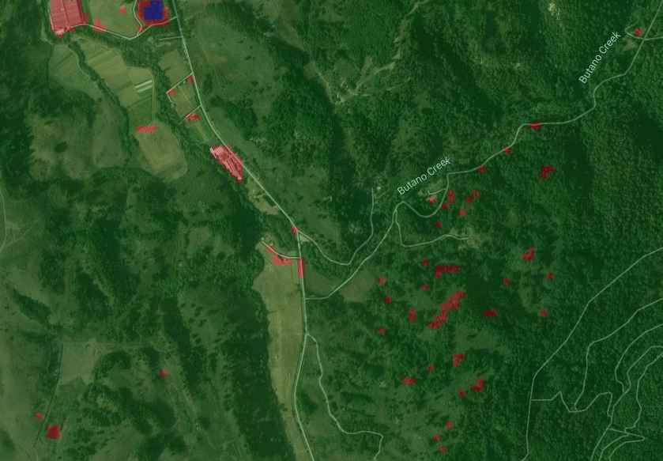

Interpretation
Classification
Human Interpretation
Pixel-Based Analysis

- Pixel by pixel comparison to class generalization
- Does not use geographic context
- Limited to the use of spectral characteristics for classification
- Does not require the use of segmentation
- Because we don't identify objects, there is a gap between image data and human knowledge models
Object-Based Analysis
- Object to object comparison
- Does use geographic context
- Implements a variety of metrics, not just spectral data
- Requires segmentation
- Objects align with how we see the world